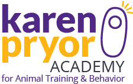

Ilana Bram · Certified Animal Trainer
Begin a wonderful new relationship with your dog based on cooperation and trust
You want a dog that greets people politely, plays nicely with other dogs, comes when called, walks calmly on leash, and listens to you as a friend. You want an enthusiastic and cooperative learner who can't wait to train with you.
I use force-free, science-based, positive-reinforcement training. When you train this way, you do more than train obedience. You learn how to communicate effectively with your dog, building trust, confidence, and cooperation in your relationship.
Training a kea parrot to step up at the Trevor Zoo
I am a certified animal trainer. I train husbandry behaviors at the Trevor Zoo, where I've formed relationships based on trust with a variety of species — bobcat, parrots, monkeys, lemurs, alpacas, porcupine, fox, turtles, and more — using positive reinforcement, clicker training, and the science of Applied Behavior Analysis.
You can train any animal using these techniques.
Meet my clicker-trained pet fish, Erasmus:

I am a committed lifelong learner. I continue to expand my knowledge in the field of animal training by attending a wide variety of lectures, webinars, seminars, and courses. Noteworthy educational achievements include:
Completed with excellence the course LLA for Veterinary and Animal Professionals, Living & Learning with Animals: The Fundamental Principles and Procedures of Teaching and Learning, with Dr. Susan Friedman. Dr. Friedman is a pioneer in applying the humane philosophy and scientifically sound teaching technology from the field of Applied Behavior Analysis. The guiding principle of this approach is a hierarchy of teaching interventions starting with the most positive, least intrusive, effective behavior solution.
 Graduated with perfect scores from the 6-month Dog Trainer Professional course at Karen Pryor Academy for Animal Training and Behavior. Karen Pryor, the author of Don't Shoot the Dog and one of the founders of clicker training, is a leading spokesperson and teacher for effective force-free training based on operant conditioning and the conditioned reinforcer.
Studied Dr. Sophia Yin's materials on counterconditioning and management, Low Stress Handling, Restraint, and Behavior Modification of Dogs & Cats.
Graduated magna cum laude with a Bachelor of Arts in International Studies.
Private Training Sessions

| First consult: | $120 |
| Follow-up sessions: | $95 |
| 3-pack: | $250 (10% savings) |
| 5-pack: | $400 (15% savings) |
| 10-pack: | $760 (20% savings) |
Every session includes follow up emails with tailored notes and fun homework assignments
To book an in-home
private training session, contact me at:
info@ilanabram.com
845 309 7631
If you are very motivated to work with your dog but cannot afford a trainer, please apply to my scholarship fund by email, detailing your circumstances and training needs.